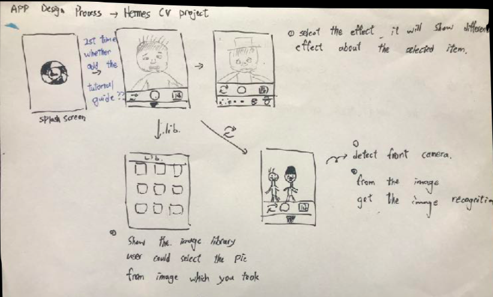

KusoCam
An app to simulate make-up effects based on computer computer vision framework in iOS system
- Project Period: Apr. 2018 - May 2018
- Project Duration: One Month
- Project Supervisor: Dalton Lin
- Project Type: Individual Class Project
Introduction
Since many social media platforms, such as Instagram, Facebook, and Snapchat, launched in the world, more and more applications have been published into the platforms to deepen the connection between friends and friends. Face Filter Camera is a kind of interesting applications with the technology of computer vision. The general public can take some fascinating portraits and share pictures with friends in an interesting way. In order to understand the theories behind the application, I developed KusoCam, a computer vision project which simulates make-up functions with iOS AR-kit and vision framework. Users can create a simulated make-up appearance through the camera on their mobile phones. The project aims to apply knowledge of computer vision in our daily life and develop an interesting mobile program to close people’s connections.
System Design
In a side of product design, KusoCam was developed from prototyping to production. I sketched a prototype and described a detailed function about the program on the paper. For example, the application has a function to transform the front and the back camera to easily access views on mobile phones. Moreover, KusoCam also enable users to store the image in the library in order to display different photos which users take.
In developing process, I drew the wireframe to demonstrate the flow of the application usage.
- The app displays a splash screen. KusoCam demonstrates an fascinating style to demonstrate that the application was fun and interesting.
- Users are able to see our main function in our app. The camera captures and processes the image in each frame on the iOS devices.
- The camera continuously detected if there is a face of a person in each frame.
- If a user is captured by camera, the system changes the outlook of a person and produced simulated making-up effects depended on a user’s setting.
In a side of technical development, I used AR-kit and Vision Framework, both of them are well-known for developing a computer vision mobile app on iOS platforms after Apple published in the WWDC 2017. With the convenience of AR-kit and Vision Framework, developers could easily create a computer vision program by calling API. The iOS system requests the face detection. Then, the system could display the position of eight features (Outer lip, inner lip, left eye’s brow, right eye’s brow, left eye, right eye, nose, and nose middle) on a user's face by the built-in detecting algorithm. After I changed the color in terms of the positions of featured points in frames. Making-up effect on a person could be exhibited in our app. In addition, I also took different usual colors on makeup product as reference to closely demonstrate different making-up effects on one person.
Review
The project not only let me take an insight into the computer vision framework and AR-kit but also know the development of an iOS app in detail. After the previous experience in my senior project (link), I start to make a prototype prior to implementation. Prototyping offers a beneficial effect on the development of a mobile app since I can understand the flow of user interfaces. Due to the time constrant, I didn't finish all function in the app. Therefore, evaluating the time of developing an app is also important. Besides, some improvements still could be made in the future. For example, the app can render the frame of images directly instead of covering a mask on one person's face. Using the newer AR-kit2 and ML-kit2 is also an option in the development of the project in the future.